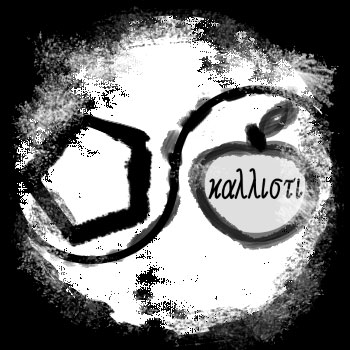

All a programming language needs to exist is a set of rules. A compiler or interpreter is secondary. A language’s behavior is entirely contained in the ruleset, and apart from languages with intentionally incorrect documentation, anyone who understands them could write their own compiler (or interpreter).
Most esolangs are experiential works: we need to play with the language, try to write code in it, to understand how it’s interesting. INTERCAL – often considered the first esolang – is a bizarre, intentional frustrating parody of languages of its time. It’s hard to get the joke without seeing how INTERCAL actually works – and it’s funny, in part, because somebody actually took the time to make it. But, like Fluxus event scores, the experience of the language all flows from the initial ruleset; any behavior of the language comes from this set of rules, whether or not the behavior obvious when reading it. Yoko Ono’s Cut Piece may sound bland or mundane in its instructions, but the violence and sexuality of the work become clear when it’s experienced.
But what if we designed languages which can never lead to an actual running program (something like the Fluxus works that are impossible to actually perform)? The next few languages we’ll look at are purely conceptual: their rules lead to empty files or have no output at all.
–
According to esolangs.org, Unnecessary (2005) is a programming language “where the existence of a program file is considered an error.” Keymaker, the creator of the language, describes it this way:
The main idea was that the language could not have programs, other than the kind that don’t exist. (Can it have those then if they don’t exist?) Then I noticed that every valid program (whatever that is) is a/the null-quine.
Unnecessary is the all-rejecting language. When you tell it to compile a program, it only succeeds when it can’t find the source code, when it’s given a bad path. So, like Keymaker says, the only programs that can exist for it are the ones that don’t exist.
Success in Unnecessary means that it creates a file, with a single instruction: NOP (“no op” for no operation), an instruction that says to do nothing.
Keymaker mentions the null quine. A quine is a program where the source code and the output of the program it builds are identical. The null quine is a special quine that does nothing, created from nothing. Because the only successful program is one that doesn’t exist, this output (of nothing) is identical to its input (of nothing). Unnecessary is like a language equivalent of the null quine itself.
This is the very possibly the opposite of the language Καλλίστῃ (“Kallisti”, 2007, created by someone who calls himself “The Prophet Wizard of the Crayon Cake and the Seven Inch Bread”). I say “very possibly,” because the instructions are deliberately confusing and full of declarations that “everything is true” and “everything is false.” Where Unnecessary is clear and simple, Kallisti is dedicated to disorder and confusion. However, it includes pseudo-BNF notation, which says that Kallisti accepts anything. In that case, this is all-accepting language, a language where all data is valid: a C++ program, your resume, or a JPEG sitting on your desktop from last month’s vacation, each one of these files is also a Kallisti program.
But, because it’s all-accepting, it can’t favor any one piece of data over another, and can’t make any decisions based on it. Instead, “computations arise from modifications to these anythings” (the anything of the source code and the anything of its output). This is done according to a syntax that “is very difficult for humans to understand.”